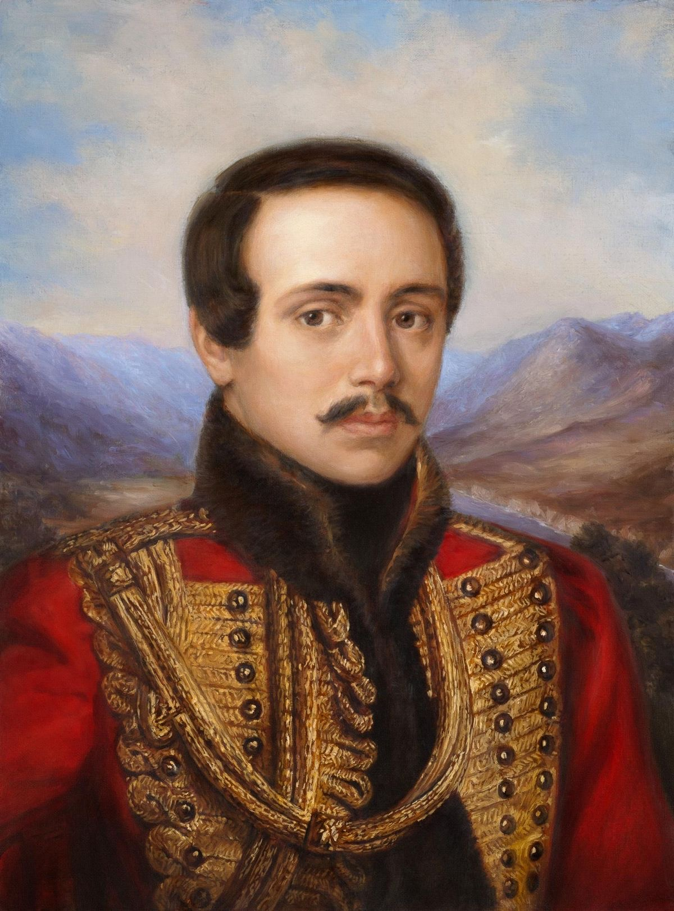
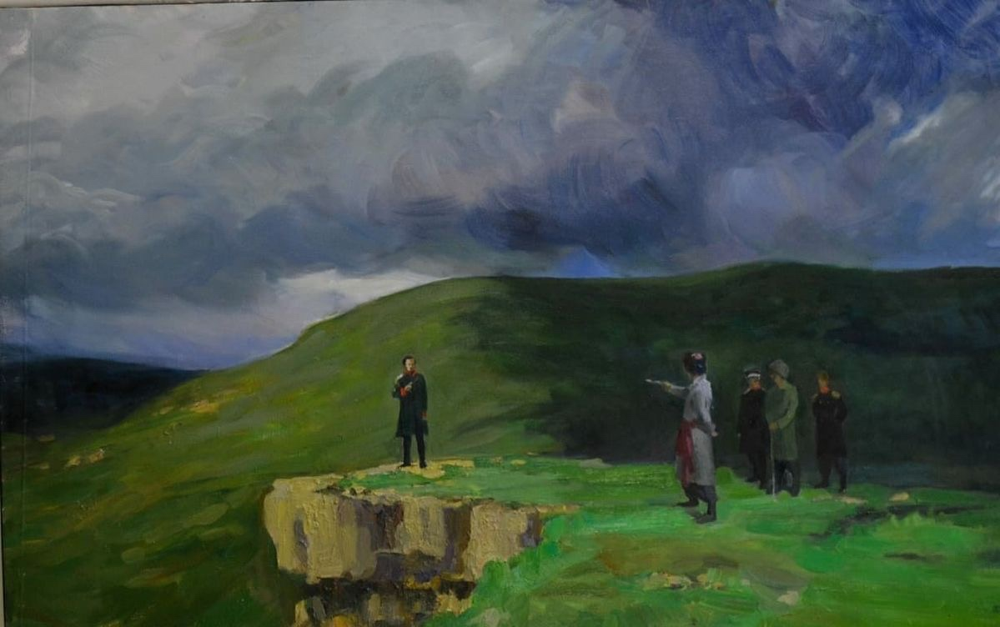

«И я погиб бы смертью поэта, — жертва злого мненья...»
Михаил Юрьевич Лермонтов родился 3 (15) октября 1814 года в Москве, но его детство прошло в имении Тарханы (Пензенская губерния), принадлежавшем его бабушке — Елизавете Арсеньевой. Это было место резких контрастов и глубоких душевных травм. Его мать, Мария Михайловна, умерла от чахотки, когда Мише не было и трех лет. Отец, Юрий Петрович, бедный армейский офицер, был вынужден уехать из-за давления тещи, которая фактически забрала мальчика на воспитание.
Маленький Миша рос физически слабым ребенком, страдающим от золотухи и постоянных простуд, но обладал феноменальной памятью и рано пристрастился к чтению. Он часами бродил один по барскому парку, наблюдая за крестьянской жизнью, слушая русские песни и кавказские предания от няни. Это раннее одиночество и оторванность от отца породили в нем ту мрачную глубину, внутреннюю гордыню и пронзительную тоску, которые пропишут каждое его стихотворение.
«Уж за горами солнце гасвало, на дворе трещал мороз...» — первые детские впечатления, переросшие в тоску по недостижимому идеалу и бунт против одиночества.
Повзрослевший Лермонтов блестяще учился в Московском университете, а затем в Школе гвардейских подпрапорщиков и кавалерийских юнкеров в Петербурге. Столичный свет встретил его блеском балов, гусарским разгулом, картёжными играми и светскими интригами. Он быстро заслужил репутацию циничного насмешника, автора едких эпиграмм и опасного дуэлянта, который презирал высший свет за его лицемерие.
Переломным моментом стала гибель Александра Пушкина в 1837 году. Лермонтов, тяжело переживая эту утрату, написал страстное стихотворение «Смерть Поэта», где открыто обвинил придворную знать в убийстве гения. Текст мгновенно разошелся по России в тысячах рукописных списков. Император Николай I пришел в ярость: поэта арестовали и отправили в его первую ссылку на Кавказ.
Кавказские горы, суровые казачьи станицы и свист пуль в стычках с горцами стали для Лермонтова истинной родиной духа. Именно здесь он создал «Героя нашего времени», поэму «Мцыри» и лучшие пейзажные зарисовки.
Пятигорск, лето 1841 года. Курортный город переполнен военными, столичной молодежью и светскими сплетнями. Между Лермонтовым и отставным майором Николаем Мартыновым вспыхивает давняя неприязнь. Мартынов, человек самолюбивый и амбициозный, не мог простить поэту постоянных едких шуток, карикатур и сарказма в свой адрес, особенно в присутствии дам.
15 (27) июля 1841 года около пяти часов вечера у подножия горы Машук разыгралась страшная трагедия. Погода была отвратительной: налетел ураганный ветер, хлынул ливень, местность заволокло непроглядным туманом. Секунданты пытались отменить поединок, но Лермонтов категорически отказался от примирения.
По воспоминаниям секундантов, когда противников развели на дистанцию, Лермонтов демонстративно опустил пистолет стволом вверх, откинулся назад и спокойно произнес: «Я не намерен стрелять в этого дурака». Мартынов же шел к барьеру с твердым намерением убить, хладнокровно прицелился и спустил курок.
Тяжелая свинцовая пуля навылет пробила грудь поэта. Смерть наступила мгновенно под грохот грозы и вспышки молний. Ему было всего 26 лет.
Похороны Лермонтова в Пятигорске были скромными: под проливным дождем гроб несли на плечах лишь несколько преданных друзей и офицеров. Император Николай I, узнав о гибели поэта, холодно обронил фразу, поразившую современников: «То, что нужно для собаки — собачья смерть». Но время расставило всё по местам: империя забыла многих генералов той эпохи, а мальчик из Тархан навсегда остался совестью и болью русской литературы.